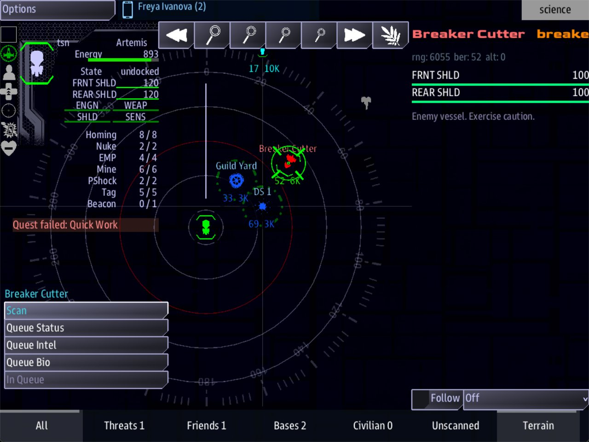

Class 2, Lecture 1 - Sides and factions¶
What you will have at the end¶
Your mission has three sides where it had one.
The Breakers are scavengers who want the hulk. Their cutter waits beyond it, and Science reads it as an enemy vessel. The Harbor Guild are friends. They keep a yard west of DS 1, and the crew can dock there. Each side has a name, a key and a color that you wrote.

Science with the Breaker Cutter selected: her name in red, the sidebreaker beside it, and the scan read-out under them.
You will edit two files. In mission.amd you add one section with three records, two
landmarks and three lines of your word list, and you change one line. In story.mast you
add one word.
The video¶
About 8 minutes. Subtitles are available in the player.
Before you start¶
- Your mission from Class 1, as Lecture 11 left it: the arc Salvage Run, the lifeboat,
and the tug that arrives. If you made it your own in Lecture 12, read your own names
where this page says DS 1, Unknown Hulk and Salvage Run. Your keys, your roles and the
line numbers of
story.mastare the same. sbs lint MyMissionsaysclean.- VS Code with the mission folder open, a command prompt open in
data\missions, and the game closed.
This lecture adds a third console to the line that starts the game:
Words for this lecture:
| Word | Meaning |
|---|---|
| Side | A faction: a team. Every ship and station is on one side, or on none |
| Key | The short word in round brackets after a name. A side's key is the word everything else uses to point at it |
| Relation | What two sides are to each other: enemies, allies, neutral, or nothing at all |
| Role | A label a thing wears. You met it in Lecture 7 |
Step 1 - The side you already have¶
Open story.mast and look at lines 18 to 20:
tsn = await prefab_spawn(prefab_side_generic, data={"key":"tsn"})
side_set_display_name(tsn, "TSN")
side_set_icon_color(tsn, "#07F")
Lecture 11 told you what they do: they make the side tsn, and give it a name and a
color. That is the only side your mission has, and everything on your map is on it.
| Thing | Where its side is written | Its side |
|---|---|---|
| DS 1 | "tsn, station", on line 64 |
tsn |
| The hulk | "tsn, derelict, ghost_ship", on line 68 |
tsn |
| The tug | "tsn, tug", on line 113, in your card |
tsn |
| The crew's ship | The game's settings, not this file | tsn |
| The lifeboat | Nowhere. A wreck needs no side | none |
Inside the quote marks, the first word is the side. The words after it are roles.
You see that word in the game. On Science, once DS 1 is scanned, tsn is drawn at the
right of its name, at the top of the read-out.
So tsn is the key of the crew's own side. Keep that word in mind: every step below
uses it.
Now look at line 44:
In Lecture 11 this line was in your table as "a section keyed sides. Class 2". It reads
a Sides section from mission.amd and makes a side from each record. Your file has no
such section yet, so until today the line did nothing.
Leave all of these lines as they are. From here on you write sides the way you write
everything else: as records in mission.amd.
Step 2 - A Sides section, with your own side in it¶
Go to the very end of mission.amd. Leave two blank lines, then type:
// ---- Sides. Each record is one faction: its name, its color, and who it fights or
// stands with. `Side:` on a landmark names one of these keys.
## [Sides](sides)
### [TSN](tsn)
---
Color: #07F
---
The Terran Stellar Navy. The crew's own side.
| Line | Meaning |
|---|---|
## [Sides](sides) |
The section. Two hashes, and the key is exactly sides: line 44 asks for that word |
### [TSN](tsn) |
One side. Three hashes, the side's name, then its key |
Color: #07F |
The side's color |
| The last line | A description. It is a note for you |
This record says again what lines 18 to 20 of story.mast say. Keep both. The record is
here so that every side of your story is in one place, written one way.
Three rules for a side's key.
- Your own side's key is
tsn, letter for letter. It is the word the crew's ship and DS 1 already carry. A record with any other key makes a new side that nobody is on. - Small letters, one word, no spaces.
breaker, notBreakerand notthe breakers. - Choose a word the crew can read. On the Science console, a scanned ship has its side's key written beside its name. The key is shown, not the name in the square brackets.
The color¶
#07F is a hash sign and three characters. They say how much red, how much green and how
much blue is in the color, in that order. Each character is one of
0 1 2 3 4 5 6 7 8 9 A B C D E F. 0 is none of it and F is all of it.
| You write | You get |
|---|---|
#F00 |
Red |
#F80 |
Orange |
#FF0 |
Yellow |
#0C6 |
Green |
#07F |
Blue |
#FFF |
White |
The game uses the color for the side's key, the word beside a contact's name on the Science console. The map itself does not use it: there a contact is colored by what it is to YOU, red for an enemy and blue for a friend, once Science has scanned it. Until then it is grey. Lint does not check a color, so copy one from the table.
Save, and run lint:
It says clean.
Step 3 - Two more sides¶
Below the TSN record, leave a blank line and type:
### [The Breakers](breaker)
---
Color: #F80
Enemies: tsn
---
Scavengers. They strip dead ships, and they do not wait for the paperwork.
### [Harbor Guild](guild)
---
Color: #0C6
Allies: tsn
---
The pilots and tug crews who work the lanes around DS 1.
Two lines are new.
| Line | Meaning |
|---|---|
Enemies: tsn |
This side and the side tsn are enemies |
Allies: tsn |
This side and the side tsn are allies |
After the colon comes a key. Two rules.
- Say it once.
Enemies: tsnon the Breakers makes the Breakers the enemy of the TSN, and the TSN the enemy of the Breakers. You do not write it again on the TSN record. - More than one key takes a comma.
Enemies: tsn, guild. Nevertsn guild, and nevertsn and guild.
Save. Run lint: clean.
Step 4 - Put something on each side¶
A side with nothing on it is a name in a file. Give each of yours one thing on the map.
You know the Side: line from Lecture 10. Then it could only say tsn. Now it can say
any key in your Sides section.
Scroll up to your Landmarks section. Find the last line of The Lifeboat, its
description. Leave one blank line below it. Then, ABOVE the // ---- Sides note, type:
### [Breaker Cutter](cutter)
---
Prefab: ship
Side: breaker
Roles: cutter
Art: pirate_strongbow
Loc: 3000, 0, 11000
---
A Breaker ship, standing off until the hulk goes quiet.
### [Guild Yard](guild_yard)
---
Prefab: station
Side: guild
Roles: yard
Art: starbase_civil
Loc: -6000, 0, 3000
---
The Harbor Guild's repair yard.
The cutter sits about 3600 beyond the hulk. The yard is about 6700 from DS 1, to the west. You will see them on Helm's map: the cutter out past the hulk, grey until Science scans it and red after, and the yard blue like DS 1.
One Art word is new. Add it to your table from Lecture 10:
| You write | It looks like | Goes with |
|---|---|---|
Art: pirate_strongbow |
A pirate ship | Prefab: ship |
Mind where these two records go. They belong to the Landmarks section, so they sit
above the line ## [Sides](sides). A record typed below that line is read as a side: the
game makes a side called Breaker Cutter and puts no ship on the map.
Save. Run lint: clean.
Step 5 - A second station changes an old step¶
Lecture 10 warned you about this, in its last table. Your story ends with:
station is a role, and the game gives it to every station. Until today DS 1 was the only
one. Now the Guild Yard wears it too. A crew could carry the log to the yard, and the game
would end there with "The log is home. DS 1 knows what happened out there."
The cure is a role that only DS 1 wears. It takes two edits.
First, in mission.amd, find Bring the Log Home and change its Done when: line:
Save, and run lint. It tells you the half you have not done yet:
== mission.amd ==
[WARNING] line 121: nothing in this mission wears a role called `home`, so `reach` matches nothing. Check the spelling against the `Roles:` line of the thing you mean, or the roles in `story.mast` (role-nothing-wears)
1 amd + 1 mast file(s): 0 error(s), 1 warning(s)
Now open story.mast and go to line 64, the line that puts DS 1 on the map. Inside the
second pair of quote marks, after station, type a comma, a space and the word home:
| Inside the quote marks | Meaning |
|---|---|
tsn |
The side. It stays first |
station |
A role. Keep it: docking looks for it |
home |
Your new role. Only DS 1 wears it |
Save. Run lint: clean.
Step 6 - Who is what to whom¶
You have three sides, so there are three pairs. Count what you have said about each.
| Pair | Said where | They are |
|---|---|---|
| TSN and the Breakers | Enemies: tsn, on the Breakers |
Enemies |
| TSN and the Harbor Guild | Allies: tsn, on the Guild |
Allies |
| The Breakers and the Harbor Guild | Nowhere | Nothing to each other |
A pair nobody mentions is nothing to each other. They are not enemies and not friends. The game does not guess.
Scavengers and harbor pilots are not strangers. In the Breakers record, change the
Enemies: line:
There are three words for a relation.
| You write | The two sides are |
|---|---|
Enemies: guild |
Enemies |
Allies: guild |
Allies |
Neutral: guild |
Neutral. They know each other and keep apart |
| Nothing | Nothing to each other. In play this is the same as neutral |
One shortcut. Enemies: * means every other side in your Sides section.
What a relation does in the game¶
This is what the crew meets. The words in quote marks are the game's own.
| To the crew, the side is | A station of that side | A ship of that side |
|---|---|---|
| An enemy | Science draws its name in red. Comms can hail and taunt it. The crew cannot dock | Science draws its name in red and reads "Enemy vessel. Exercise caution." Comms is offered Hail, Taunt and Surrender now |
| An ally | Science draws its name in green and reads "This is a friendly station." Comms is offered Hail, Build Weapons, Request Priority Docking and Market. Helm can dock | Science shows it as unknown until you write scan text for one of its roles. Then its name is green, and Comms is offered Hail |
| Neutral, or nothing | Science shows it as unknown until you write scan text for one of its roles. Then its name is white. Comms is offered nothing, and the crew cannot dock |
The same: unknown, then white once it has scan text of yours. Comms is offered nothing |
Three more things follow from being enemies or allies.
- The crew's own side counts as an ally. DS 1 and the hulk are drawn in green.
- An enemy close by stops docking. With an enemy ship a few hundred from yours, Helm's request to dock is refused. How close is too close grows with the difficulty the server chose.
- Being enemies does not start a fight. The cutter sits where you put it. It does not move and it does not shoot. A ship needs orders for that, and a landmark has none. Ships that hunt come with the Siege bosses, later in this class.
Step 7 - Keep your word list true¶
You have three new roles. At the top of mission.amd, add them under the tug line of
your word list:
// ROLE home worn by DS 1, and by nothing else
// ROLE cutter worn by the Breaker Cutter, a landmark in this file
// ROLE yard worn by the Guild Yard, a landmark in this file
A side's key needs no line in the list. Both places that use it are in mission.amd, and
lint checks them for you.
Save. Run lint: clean.
Your finished pieces¶
At the end of the Landmarks section of mission.amd:
### [Breaker Cutter](cutter)
---
Prefab: ship
Side: breaker
Roles: cutter
Art: pirate_strongbow
Loc: 3000, 0, 11000
---
A Breaker ship, standing off until the hulk goes quiet.
### [Guild Yard](guild_yard)
---
Prefab: station
Side: guild
Roles: yard
Art: starbase_civil
Loc: -6000, 0, 3000
---
The Harbor Guild's repair yard.
At the end of the file:
// ---- Sides. Each record is one faction: its name, its color, and who it fights or
// stands with. `Side:` on a landmark names one of these keys.
## [Sides](sides)
### [TSN](tsn)
---
Color: #07F
---
The Terran Stellar Navy. The crew's own side.
### [The Breakers](breaker)
---
Color: #F80
Enemies: tsn, guild
---
Scavengers. They strip dead ships, and they do not wait for the paperwork.
### [Harbor Guild](guild)
---
Color: #0C6
Allies: tsn
---
The pilots and tug crews who work the lanes around DS 1.
In Bring the Log Home:
In story.mast, line 64:
Both whole files are in example\.
Step 8 - Check it¶
Every row below was made on purpose, one at a time, on the finished files. Lint was run, and then the game was run without a screen, by a script that asked the game what each thing is to the crew. The last column is the code at the end of lint's line.
In these tables "unknown" means what Step 6 said about a stranger: Science shows the word
unknown in place of the name, Comms is offered nothing, and the crew cannot dock.
Lint names these.
| Mistake | What the game does | Lint says |
|---|---|---|
## [Sides](side) or ## [Factions](factions) |
Makes no sides. The cutter and the yard are unknown |
section-not-loaded. Its sentence lists the keys the story asks for |
| A side typed with two hashes | Loses that side and every side below it | section-not-loaded, about that side's key |
| The Sides line typed with three hashes, or left out | Makes no sides | landmark-no-loc and landmark-no-prefab for each side, and unknown-field: your sides are read as landmarks |
| The Sides line typed with one hash | Makes no sides | heading-level-jump, an error, and section-not-loaded for each side |
| The cutter and the yard typed below the Sides line | Places neither. Makes two more sides, called Breaker Cutter and Guild Yard. mast.runtime.log asks if each is under the wrong heading |
prefab-wrong-record for each, and unknown-field three times for each: Side, Roles and Art are not a side's fields |
| Two sides with the same key | Makes one side, with the lower record's name, color and relations. With breaker twice, the cutter was a friend |
duplicate-key, and dangling-side for the key that is gone |
### [The Breakers] (no key), or ### The Breakers (no brackets) |
Makes no Breakers. The cutter is unknown |
broken-heading, an error, and dangling-side on the cutter's Side: line |
The key changed in the heading and not in Side: |
The cutter is unknown |
dangling-side, on the Side: line |
Enemy: tsn, Ally: tsn or Colour: #F80 |
Ignores the line | unknown-field. It asks Did you mean and gives the word |
Enemies tsn (no colon) |
Ignores the line | fence-syntax, an error: it expected Label: value |
Enemies: typed below the closing --- |
Ignores the line | field-below-fence |
A side's closing --- left out |
Loses that side's description. The sides are still made | unclosed-data-fence, an error |
Sides: breaker on the cutter |
Puts the cutter on no side. It is unknown |
unknown-field |
Enemies: tsm (a misspelled key) |
Makes the Breakers and the TSN nothing to each other. The cutter is unknown |
dangling-side, and the keys you did declare |
Enemies: tsn guild, tsn and guild or tsn; guild |
Makes no enemies at all. The whole line is read as one key | dangling-side: put a comma between sides |
Side: braker on the cutter |
Puts the cutter on no side. It is unknown |
dangling-side |
Side: The Breakers (the name, not the key) |
It half works. Science reads the cutter as an enemy, and the word beside its name is the breakers. An enemy close by no longer stops docking |
dangling-side |
The step says reach home 1000 and DS 1 does not wear home |
The story never finishes | role-nothing-wears |
Line 44 of story.mast deleted |
Makes no sides | section-not-loaded |
A # typed in front of line 44 of story.mast |
Makes no sides. The cutter and the yard are unknown. Lecture 11 said it: a line that starts with # is a note |
section-not-loaded |
For every row of the next table lint says clean. Check these by eye.
What lint cannot see.
| You wrote | What happens |
|---|---|
The step still says reach station 1000, whether or not DS 1 wears home |
The story can be finished at the Guild Yard. Lint cannot count your stations |
No Side: line on the cutter |
The cutter is on no side. It is unknown |
Roles: cutter, breaker in place of Side: breaker |
The same. A role is not a side |
(Breaker) with a capital in the heading |
It half works. Science reads the cutter as an enemy. An enemy close by no longer stops docking. Write a key in small letters |
#### [Harbor Guild](guild) (four hashes) |
The Guild is not made. The yard is unknown |
Allies: tsn and Enemies: tsn in one record |
Enemies |
| Two records that disagree about the same pair | The record lower in the file wins |
Enemies: tsn on the TSN record itself |
DS 1 is drawn in red, and the crew cannot dock at home |
Color: F80, #F8 or burnt orange |
Not known. The words go to the game as you typed them. Use the table in Step 2 |
A scan record of your own for cutter, on the scan or intel tab. Or one for yard, on the scan tab |
The game's own reading is shown, not yours. Yours is used only on a tab the game has no reading for, such as mat |
"tsn, station home" on line 64 (no comma) |
DS 1 wears one role called station home. The story never finishes |
"home, tsn, station" on line 64 (the new word first) |
DS 1 is on a side called home, which does not exist. It is unknown, and the crew cannot dock there |
When a Side:, Enemies: or Allies: word names no side, the game also says so. After a
play, mast.runtime.log in your mission folder has a line that begins Side not found:
and gives the word in square brackets.
These are fine.
| You wrote | Result |
|---|---|
Enemies: TSN, Guild (capitals), or Side: Breaker on the cutter |
Works. The game reads these words in small letters |
Enemies: tsn,guild (no space after the comma) |
Works |
Enemies: * on the Breakers |
Works: enemies of the TSN and of the Guild |
| No TSN record in the Sides section | Works. Lines 18 to 20 of story.mast still make your side |
Lines 18 to 20 of story.mast deleted, with the TSN record in the file |
Works. Leave them where they are all the same |
Your own side written a second time with another key, such as ### [TSN](navy) |
Works, and makes one more side that nobody is on. Take it out |
Prefab: npc on the cutter |
Works. It means the same as Prefab: ship |
Step 9 - Play it¶
- On Science, pick the Guild Yard from the contact list. A station in sensor range
scans itself, so there is nothing to press. Its name is drawn in green, the word
guildis beside it in the Guild's own green, and thescantab says "This is a friendly station." - On Comms, select the Guild Yard. You are offered Hail, Build Weapons, Request Priority Docking and Market. Press Hail. The answer arrives as a header in the message list at the top: click the header to read it. The words are the game's own, and they change from game to game.
- On Helm, fly to within 600 of the yard. Helm can dock there, the same as at DS 1.
- Fly out past the Unknown Hulk. On Science, pick the Breaker Cutter and scan it if
it is not scanned yet: until it is, the list calls it
unknownand Helm draws it grey, so find it on the map. Once scanned its name is drawn in red, the wordbreakeris beside it in orange, and thescantab says "Enemy vessel. Exercise caution." - On Comms, select the cutter. You are offered Hail, Taunt and Surrender now. Press Hail, and click the answer's header in the message list. It is one of the game's own lines for a pirate ship.
- Stay near the cutter for a while. It does not move, and nobody shoots.
- Now finish the story: the hulk, the lifeboat, the wait for the tug. When Bring the Log
Home appears, fly to the Guild Yard first. Nothing happens. Fly to DS 1. Inside 1000,
the game ends with your
Win:sentence. - Close the game. Open
mast.compile.logandmast.runtime.log. Both are empty.
The side is paid what it was paid in Lecture 11: 500 credits with the bonus, 450 without.
On the map, once both are scanned, the cutter is red and the yard is blue, like DS 1. That is the color of a
relation. Your Color: shows only in the word beside the name.
The other tabs of an enemy ship¶
The cutter's status, intel and bio tabs are filled by the game too, and two of them
read badly, with a word missing or out of place. The game is looking for the ship's race,
and a landmark has none. A scan record of your own for those tabs does not help: on an
enemy ship the game's reading replaces yours.
One tab is still yours. The game has no reading for mat, so a scan record with
Scan of: cutter and Tab: mat is shown as you wrote it.
If something goes wrong¶
| What you see | Likely cause |
|---|---|
The cutter or the yard stays unknown on Science, however long you wait |
It is on no side, or its side is nothing to yours. Run lint first. If it is clean, work down this list: the thing has no Side: line; the side's heading has four hashes; there is no Enemies: or Allies: line. Then look in mast.runtime.log for Side not found: |
| Comms is offered nothing for the cutter | The same list. Comms has nothing to say to a contact Science has not identified |
| The crew cannot dock at the Guild Yard | The Guild is not your ally. Check Allies: tsn and the yard's Side: guild |
| The crew cannot dock at DS 1 either, and DS 1 is drawn in red | The TSN record names tsn as its own enemy |
DS 1 reads unknown, and the crew cannot dock there |
On line 64, home was typed before tsn |
| Nothing is where it should be: no cutter, no yard | The two landmarks are below the ## [Sides](sides) line. Move them up into the Landmarks section |
| No quests at all | A heading in mission.amd jumps a level. Run lint: it is an error, not a warning |
| The story ends at the Guild Yard | The step still says reach station 1000 |
| The story never ends | The step says reach home 1000 and DS 1 does not wear home. Look for the comma on line 64 |
| Your mission starts, and a page headed "Mast Compiler Errors" is there in place of the game | story.mast does not compile. Run lint, and fix the line it names |
Lint says section-not-loaded about sides, and your story.mast has no line that begins sides_declare_amd( |
Your mission was made by an older copy of the tool. In story.mast, put your cursor at the end of the line that begins shared MISSION_DOC =, press Enter, and type, four spaces in: sides_declare_amd(amd_section(MISSION_DOC, "sides")) |
One edit for any npc_spawn line¶
No new recipe card today. Your three cards from Lecture 11 stand, and you can now make one
more change to the npc_spawn line on any of them:
| Inside the second pair of quote marks | Change it to |
|---|---|
The first word, tsn |
The key of any side in your Sides section |
| The words after it | Roles, with a comma between them |
So the tug could arrive as a Guild ship: "guild, tug".
Exercise¶
Add a faction of your own, and watch the crew's view of it change.
- At the end of the Sides section, write a fourth side: a name, a key and a color of your
own. Give it no
Enemies:line and noAllies:line. - In the Landmarks section, above the
// ---- Sidesnote, give it one ship:Prefab: ship,Side:with your key, a role of your own,Art: cargo_ship, and aLoc:of your own. - Run lint, then play. On Science your ship reads
unknown, and it stays that way. A stranger tells Science nothing. - Give it a voice. In the Scans section, write a scan record for its role, as you did in
Lecture 10:
Scan of:your role,Tab: scan, and one%line. Play again. Now Science shows its name in white, your key beside it in your color, and your reading. - Add
Enemies: tsnto your side. Play. The name is red, the reading is the game's own "Enemy vessel. Exercise caution.", and Comms is offered Taunt. - Change the line to
Allies: tsn. Play. The name is green, your reading is back, and Comms is offered Hail. - Keep the relation your story needs, and add your role to the word list.
Checkpoint¶
You are done when all five are true:
sbs lint MyMissionanswersclean, with0 error(s), 0 warning(s).- Science shows the Breaker Cutter's name in red, with
breakerbeside it, and reads "Enemy vessel. Exercise caution." - Science shows the Guild Yard's name in green, with
guildbeside it, and the crew can dock there. - Comms is offered Taunt for the cutter and Request Priority Docking for the yard.
- Bring the Log Home does not finish at the Guild Yard, and does finish at DS 1.
Next¶
Lecture 2 puts people in the story: three characters, each with a face.
Further reading¶
- "Sides, lifeforms & faces" in the library documentation. Its first half is script. The
part headed "Declaring sides as data" is the one for you: it explains
*, and two more words,playersandcivilians. Do not paste itssides_load_amdline. That line reads a whole file of sides, and pointed atmission.amdit makes a side out of your mission's title. maps\sides.amdin the LegendaryMissions folder: the three sides of the stock game, in a file of their own.- "Sides - who lives here" in the Open Universe writer's guide. Its
Character:,Disposition:,Home:andFlies:lines belong to Open Universe, which is Class 5. In a mission like yours lint calls each one an unknown field. Lint letsValues:through. That line belongs to reputation, which is Lecture 6.
Download this lecture's finished files (a zip of its example folder).